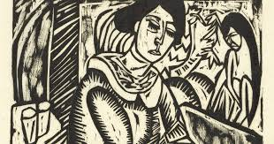
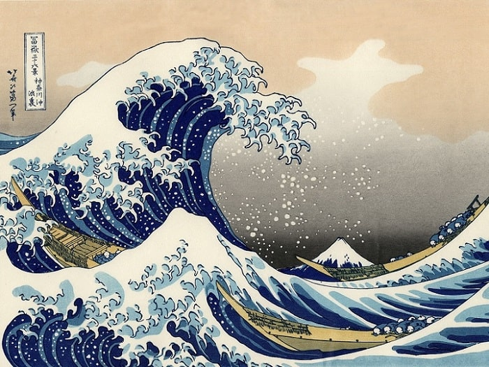
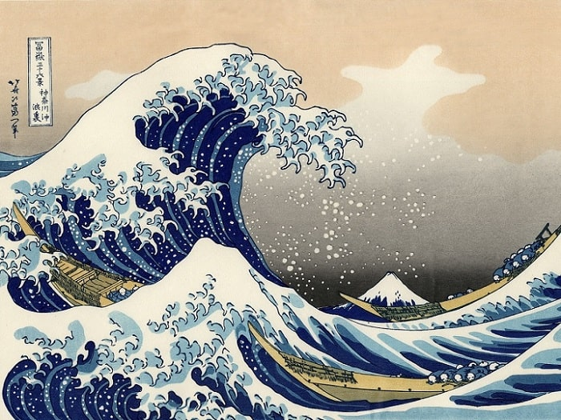

Técnicas artísticas en el grabado
El grabado implica la creación de una matriz (generalmente en metal, madera o linóleo)
que se entinta y se prensa sobre papel para obtener múltiples copias de una obra. Es una
técnica muy valorada por su capacidad de reproducir imágenes de manera detallada.
Xilografía: Consiste en tallar una matriz en una plancha de madera. Fue una de las
primeras técnicas de impresión en Europa, muy utilizada durante la Edad Media para la
ilustración de libros.

Aguafuerte: Se trata de una técnica de grabado en metal, generalmente cobre, donde
se utiliza un ácido para corroer las líneas trazadas en la superficie de la placa.
Es ideal para lograr detalles minuciosos y texturas.
.jfif) Litografía: Se basa en el principio de la repulsión entre el agua y la grasa. El artista
dibuja con un lápiz graso sobre una piedra caliza que luego se humedece y se entinta, de modo
que la tinta se adhiere solo a las zonas grasas. Fue popular en el siglo XIX y utilizada por
artistas como Toulouse-Lautrec.

Litografía: Se basa en el principio de la repulsión entre el agua y la grasa. El artista
dibuja con un lápiz graso sobre una piedra caliza que luego se humedece y se entinta, de modo
que la tinta se adhiere solo a las zonas grasas. Fue popular en el siglo XIX y utilizada por
artistas como Toulouse-Lautrec.
